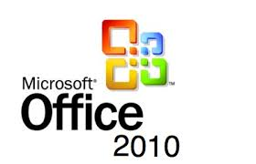

On the Insert tab, the galleries include items that are designed to coordinate with the overall look of your
document. You can use these galleries to insert tables, headers, footers, lists, cover pages, and other document
building blocks. When you create pictures, charts, or diagrams, they also coordinate with your current document look.
You can easily change the formatting of selected text in the document text by choosing a look for the selected text from
change the looks available in the Quick Style gallery, use the Change Current Quick Style Set command.
Both the Themes gallery and the Quick Styles gallery provide
reset commands so that you can always restore the look of your document to the original contained in your current template
the Insert tab, the galleries include items that are designed to coordinate with the overall look of your
document. You can use these galleries to insert tables, headers, footers, lists, cover pages, and other document building blocks.
When you create pictures, charts, or diagrams, they also coordinate with your current document look. You can easily change the formatting of
When you create pictures, charts, or diagrams, they also coordinate with your current document look. You can easily change the formatting of selected text in the document text by choosing a look for the selected text from the Quick Styles gallery on the Home tab. You can also format text directly by using the other controls on the Home tab. Most controls offer a choice of using the look from the current theme or using a format that you specify directly. To change the overall look of your document, choose new Theme elements on the Page Layout tab. To change the looks available in the Quick Style gallery, use the Change Current Quick Style Set command. Both the Themes gallery and the Quick Styles gallery provide reset commands so that you can always restore the look of your document to the original contained in your current template. On the Insert tab, the galleries include items that are designed to coordinate with the overall look of your document. You can use these galleries to insert tables, headers, footers, lists, cover pages, and other document building blocks. When you create pictures, charts, or diagrams, they also coordinate with your current document look. You can easily change the formatting of selected text in the document text by choosing a look for the selected text from the Quick Styles gallery on the Home tab. You can also format text directly by using the other controls on the Home tab. Most controls offer a choice of using the look from the current theme or using a format that you specify directly. To change the overall look of your document, choose new Theme elements on the Page Layout tab. To change the looks available in the Quick Style gallery, use the Change Current Quick Style Set command. Both the Themes gallery and the Quick Styles gallery provide reset commands so that you can always restore the look of your document to the original contained in your current template. On the Insert tab, the galleries include items that are designed to coordinate with the overall look of your document. You can use these galleries to insert tables, headers, footers, lists, cover pages, and other document building blocks. When you create pictures, charts, or diagrams, they also coordinate with your current document look. You can easily change the formatting of selected text in the document text by choosing a look for the selected text from the Quick Styles gallery on the Home tab.
You can also format text directly by using the other controls on the Home tab. Most controls offer a choice of using the look from the current theme or using a format that you specify directly. To change the overall look of your document, choose new Theme elements on the Page Layout tab. To change the looks available in the Quick Style gallery, use the Change Current Quick Style Set command. Both the Themes gallery and the Quick Styles gallery provide reset commands so that you can always restore the look of your document to the original contained in your current template. On the Insert tab, the galleries include items that are designed to coordinate with the overall look of your document. You can use these galleries to insert tables, headers, footers, lists, cover pages, and other document building blocks. When you create pictures, charts, or diagrams, they also coordinate with your current document look. You can easily change the formatting of selected text in the document text by choosing a look for the selected text from the Quick Styles gallery on the Home tab. You can also format text directly by using the other controls on the Home tab. Most controls offer a choice of using the look from the current theme or using a format that you specify directly. To change the overall look of your document, choose new Theme elements on the Page Layout tab. To change the looks available in the Quick Style gallery, use the Change Current Quick Style Set command. Both the Themes gallery and the Quick Styles gallery provide reset commands so that you can always restore the look of your document to the original contained in your current template. On the Insert tab, the galleries include items that are designed to coordinate with the overall look of your document. You can use these galleries to insert tables, headers, footers, lists, cover pages, and other document building blocks. When you create pictures, charts, or diagrams, they also coordinate with your current document look. You can easily change the formatting of selected text in the document text by choosing a look for the selected text from the Quick Styles gallery on the Home tab. You can also format text directly by using the other controls on the Home tab. Most controls offer a choice of using the look from the current theme or using a format that you specify directly.
To change the overall look of your document, choose new Theme elements on the Page Layout tab. To change the looks available in the Quick Style gallery, use the Change Current Quick Style Set command. Both the Themes gallery and the Quick Styles gallery provide reset commands so that you can always restore the look of your document to the original contained in your current template. On the Insert tab, the galleries include items that are designed to coordinate with the overall look of your document. You can use these galleries to insert tables, headers, footers, lists, cover pages, and other document building blocks. When you create pictures, charts, or diagrams, they also coordinate with your current document look. You can easily change the formatting of selected text in the document text by choosing a look for the selected text from the Quick Styles gallery on the Home tab. You can also format text directly by using the other controls on the Home tab. Most controls offer a choice of using the look from the current theme or using a format that you specify directly. To change the overall look of your document, choose new Theme elements on the Page Layout tab. To change the looks available in the Quick Style gallery, use the Change Current Quick Style Set command. Both the Themes gallery and the Quick Styles gallery provide reset commands so that you
the looks available in the Quick Style gallery, use the Change Current Quick Style Set command. Both the Themes gallery and the Quick Styles
gallery provide reset commands so that you can always restore the look of your document to the original contained in your current template.
On the Insert tab, the galleries include items that are designed to coordinate with the overall look of your document. When you create pictures, charts, or diagrams, they also coordinate with your current document look. You can easily change the formatting of selected text in the document text by choosing a look for the selected text from the Quick Styles gallery on the Home tab. You can also format text directly by using the other controls on the Home tab. Most controls offer a choice of using the look from the current theme or using a format that you specify directly. To change the overall look of your document, choose new Theme elements on the Page Layout tab. To change the looks available in the Quick Style gallery, use the Change Current Quick Style Set command. Both the Themes gallery and the Quick Styles gallery provide reset commands so that you can always restore the look of your document to the original contained in your current template. On the Insert tab, the galleries include items that are designed to coordinate with the overall look of your document. You can use these galleries to insert tables, headers, footers, lists, cover pages, and other document building blocks. When you create pictures, charts, or diagrams, they also coordinate with your current document look. You can easily change the formatting of selected text in the document text by choosing a look for the selected text from the Quick Styles gallery on the Home tab. You can also format text directly by using the other controls on the Home tab. Most controls offer a choice of using the look from the current theme or using a format that you specify directly. To change the overall look of your document, choose new Theme elements on the Page Layout tab. To change the looks available in the Quick Style gallery, use the Change Current Quick Style Set command. Both the Themes gallery and the Quick Styles gallery provide reset commands so that you can always restore the look of your document to the original contained in your current template. On the Insert tab, the galleries include items that are designed to coordinate with the overall look of your document. You can use these galleries to insert tables, headers, footers, lists, cover pages, and other document building blocks. When you create pictures, charts, or diagrams, they also coordinate with your current document look. You can easily change the formatting of selected text in the document text by choosing a look for the selected text from the Quick Styles gallery on the Home tab.
You can also format text directly by using the other controls on the Home tab. Most controls offer a choice of using the look from the current theme or using a format that you specify directly. To change the overall look of your document, choose new Theme elements on the Page Layout tab. To change the looks available in the Quick Style gallery, use the Change Current Quick Style Set command. Both the Themes gallery and the Quick Styles gallery provide reset commands so that you can always restore the look of your document to the original contained in your current template. On the Insert tab, the galleries include items that are designed to coordinate with the overall look of your document. You can use these galleries to insert tables, headers, footers, lists, cover pages, and other document building blocks. When you create pictures, charts, or diagrams, they also coordinate with your current document look. You can easily change the formatting of selected text in the document text by choosing a look for the selected text from the Quick Styles gallery on the Home tab. You can also format text directly by using the other controls on the Home tab. Most controls offer a choice of using the look from the current theme or using a format that you specify directly. To change the overall look of your document, choose new Theme elements on the Page Layout tab. To change the looks available in the Quick Style gallery, use the Change Current Quick Style Set command. Both the Themes gallery and the Quick Styles gallery provide reset commands so that you can always restore the look of your document to the original contained in your current template. On the Insert tab, the galleries include items that are designed to coordinate with the overall look of your document. You can use these galleries to insert tables, headers, footers, lists, cover pages, and other document building blocks. When you create pictures, charts, or diagrams, they also coordinate with your current document look. You can easily change the formatting of selected text in the document text by choosing a look for the selected text from the Quick Styles gallery on the Home tab. You can also format text directly by using the other controls on the Home tab. Most controls offer a choice of using the look from the current theme or using a format that you specify directly.
To change the overall look of your document, choose new Theme elements on the Page Layout tab. To change the looks available in the Quick Style gallery, use the Change Current Quick Style Set command. Both the Themes gallery and the Quick Styles gallery provide reset commands so that you can always restore the look of your document to the original contained in your current template. On the Insert tab, the galleries include items that are designed to coordinate with the overall look of your document. You can use these galleries to insert tables, headers, footers, lists, cover pages, and other document building blocks. When you create pictures, charts, or diagrams, they also coordinate with your current document look. You can easily change the formatting of selected text in the document text by choosing a look for the selected text from the Quick Styles gallery on the Home tab. You can also format text directly by using the other controls on the Home tab. Most controls offer a choice of using the look from the current theme or using a format that you specify directly. To change the overall look of your document, choose new Theme elements on the Page Layout tab. To change the looks available in the Quick Style gallery, use the Change Current Quick Style Set command. Both the Themes gallery and the Quick Styles gallery provide reset commands so that you
You can use these galleries to insert tables, headers, footers, lists, cover pages, and other document building blocks.